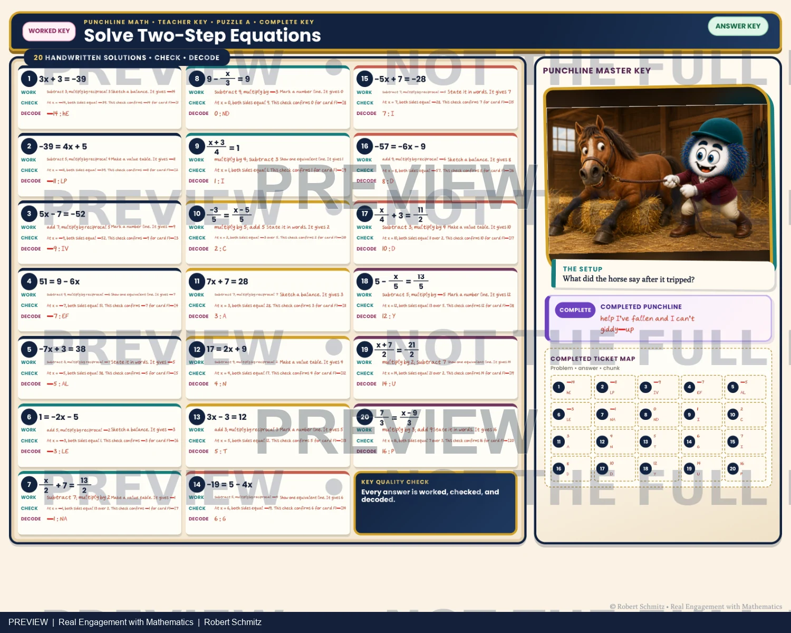

Printable learning experience · Two-step equations
Make the solution part of the reveal.
A student-and-teacher comparison of an equation-solving activity with a decoding destination.
Inspect the materials ↓Give practice a reason to continue
In this two-step-equation lesson, solving supplies an answer, the decoder maps that answer to a letter chunk, and the chunks reveal a punchline. The student page brings the mathematics and decoding route together.
Student experience and facilitator support
Solve. Decode. Reveal.

{kind=link}

Two kinds of checking
The reveal is a cue; the work is the evidence
An unexpected letter chunk can prompt a learner to revisit a solution. A plausible punchline alone does not prove the equations were solved correctly. The teacher excerpt supports checking the mathematical work as well as the reveal.
The sample mixes direct solving with prompts to model, verify, or diagnose an error. The puzzle gives those tasks a shared destination.
What this sample establishes
The protected excerpts show the authored activity and its teacher support. They are selected preview pages, not the complete student or teacher package. Engagement and learning outcomes have not been measured here.
Next evaluation: observe whether learners revisit their mathematics after an unexpected decode, and whether they can explain a solution independently of the puzzle.